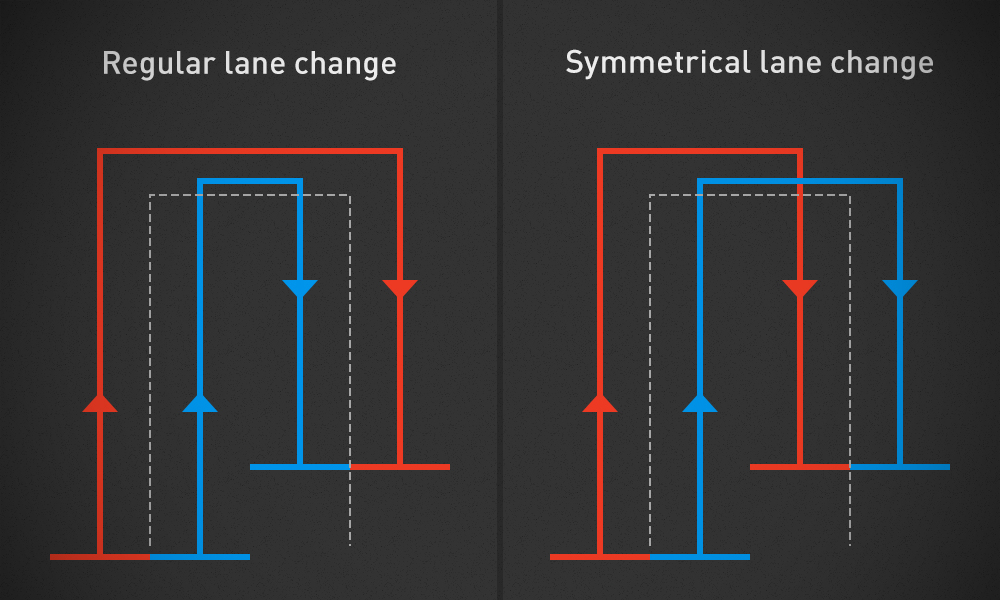

Bugs and suggestion are handled on our issues page.
Always update to the latest build and check if the problem really still exists before reporting issues.
Check if your problem has already been reported by someone else. If so, contribute to that issue instead of creating a new one.
Write in English. We have users (and developers) from all over the world. And by writing in English, you help them (and us) understand and maybe even contributing to the solution.
Be descriptive and clear: use a clear title without writing a whole novel. In the text area, describe the situation as precise as possible.
Upload the log:
Go to Gist or Pastebin, and add your log content by either using copy and paste, or dragging the log.txt file into the text area (Gist only).
Post the link to your log in the issue.
Tell us the Courseplay version you're using. You can find it either in the game's log (### Courseplay: initialized 37/37 files (v4.00.0158)), or ingame in the bottom right corner of the Courseplay hud.
Tell us which map and which mods you are using.
Which tools and vehicles does Courseplay support?
Courseplay supports all default game vehicles and tools, with the exception of the water trailer. We also support all modifications which use the default game scripts.
Note: Courseplay does not automatically cut or handle any trees.
In addition, we specifically support the following modifications (valid as of v4.00):
AutoCombine by biedens
DriveControl by upsidedown
Overloader specialization for auger wagons by Satis
How to use the offset? — a.k.a. how do I let multiple vehicles drive a fieldwork course?
The horizontal offset can be used for two different situations:
The work tool you're using isn't symmetrical, so you need to drive slightly off course (left or right) to have the tool in the path's center. This applies to, e.g., a bale loader, or a side mower. In this case, use the tool offset setting.
You want to use a group of vehicles to drive side by side, in order to work the field faster. In this case, use the lane offset setting.
The asymmetrical tool (tool offset)
On the X axis, calculate (or at least estimate) the distance between the point where the tool should "hit" the path and the vehicle's center. Use that distance as the horizontal offset. For example, the default bale loader (Arcusin) needs an offset of approximately 1.5 to 2 metres to the left (as the grabber is on the right side of the tool).
The groupies (lane offset)
In order to have multiple vehicles drive in a group, make sure of the following:
Each vehicle uses the same tool, with the same work width.
Don't start all vehicles at once. If you do so, they will get stuck with another vehicle of the group at one point or the other.
If the tool's work width is not an integer (whole number like 6, 8, 12) but instead is in the decimal area (e.g. 7.5, 3.4), use the next lower work width to calculate the offset. The reason for this is our limitation of setting the offset, which allows only for .5 steps.
Each vehicle must use the same generated course. The course's work width needs to be tool's work width multiplied with the amount of vehicles. For example, when you use two 6m seeders, the course's work width has to be 12 – again: each tool needs to use this 12m (total work width) course.
Staying with the seeder example, vehicle #1 will drive on the left side of the course with an offset of -3 metres, vehicle #2 will drive on the right side of the course with an offset of 3 metres.
Regular vs. symmetric lane change
There are two methods for setting up the lane usage: regular lane change and symmetrical lane change.
Regular lane change: while in the first lane they will drive side by side, remember that their position, relative to the path, will always be left/right of the course. So in the next lane, they will appear to switch the positions, but in reality they will still be left/right of the path.
Symmetrical lane change: the vehicles will effectively leave a free lane for the following vehicle.

Regular vs. symmetrical lane changeRegular lane changeSymmetric lane change
The lane offset calculation
The formula for calculating the offset is:
let num be the amount of vehicles
let pos be the vehicle's position (#1, #2, #3, …)
let ww be the tool's work width
the tool's offset is:
( pos - ( (num + 1) / 2 ) ) * ww
But, we have also built a tool for calculating the correct offset settings for multiple tools: